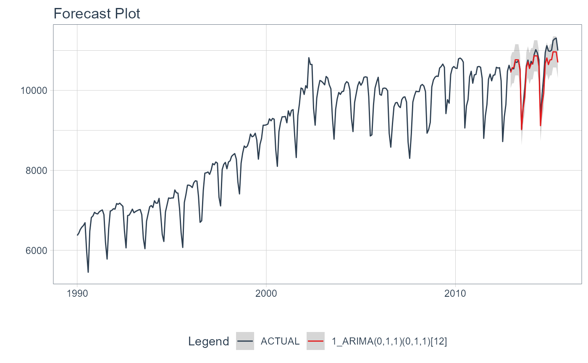

This is a wrapper for plot_time_series() that generates an interactive (plotly) or static
(ggplot2) plot with the forecasted data.
plot_modeltime_forecast( .data, .conf_interval_show = TRUE, .conf_interval_fill = "grey20", .conf_interval_alpha = 0.2, .smooth = FALSE, .legend_show = TRUE, .legend_max_width = 40, .title = "Forecast Plot", .x_lab = "", .y_lab = "", .color_lab = "Legend", .interactive = TRUE, .plotly_slider = FALSE, ... )
| .data | A |
|---|---|
| .conf_interval_show | Logical. Whether or not to include the confidence interval as a ribbon. |
| .conf_interval_fill | Fill color for the confidence interval |
| .conf_interval_alpha | Fill opacity for the confidence interval. Range (0, 1). |
| .smooth | Logical - Whether or not to include a trendline smoother.
Uses See |
| .legend_show | Logical. Whether or not to show the legend. Can save space with long model descriptions. |
| .legend_max_width | Numeric. The width of truncation to apply to the legend text. |
| .title | Title for the plot |
| .x_lab | X-axis label for the plot |
| .y_lab | Y-axis label for the plot |
| .color_lab | Legend label if a |
| .interactive | Returns either a static ( |
| .plotly_slider | If TRUE, returns a plotly date range slider. |
| ... | Additional arguments passed to |
A static ggplot2 plot or an interactive plotly plot containing a forecast
library(tidyverse) library(lubridate) library(timetk) library(parsnip) library(rsample) # Data m750 <- m4_monthly %>% filter(id == "M750") # Split Data 80/20 splits <- initial_time_split(m750, prop = 0.9) # --- MODELS --- # Model 1: auto_arima ---- model_fit_arima <- arima_reg() %>% set_engine(engine = "auto_arima") %>% fit(value ~ date, data = training(splits))#># ---- MODELTIME TABLE ---- models_tbl <- modeltime_table( model_fit_arima ) # ---- FORECAST ---- models_tbl %>% modeltime_calibrate(new_data = testing(splits)) %>% modeltime_forecast( new_data = testing(splits), actual_data = m750 ) %>% plot_modeltime_forecast(.interactive = FALSE)#> Warning: no non-missing arguments to max; returning -Inf